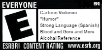

Available for the following platforms:


FROM THE PEOPLE THAT PLAYED LEFT 4 DEAD 2
Prepare for the most anticipated game since Sexo Dos
Now with a playable Nicki Minaj.
PRE-ORDER NOW FOR THE EXCLUSIVE FEMBOY HOOTERS LEVEL!
"Truly there is no better example of gaming reaching the heights of pure cinema!" — Hideous Kojima
Available for the following platforms: